The battery cover
A quarter-millimetre of stainless steel
Behind the screen, a thin metal plate holds the lithium-ion battery in place. It has two jobs: shield the battery from impacts, and keep a swelling battery from pushing into the rest of the device or into the user's hand.
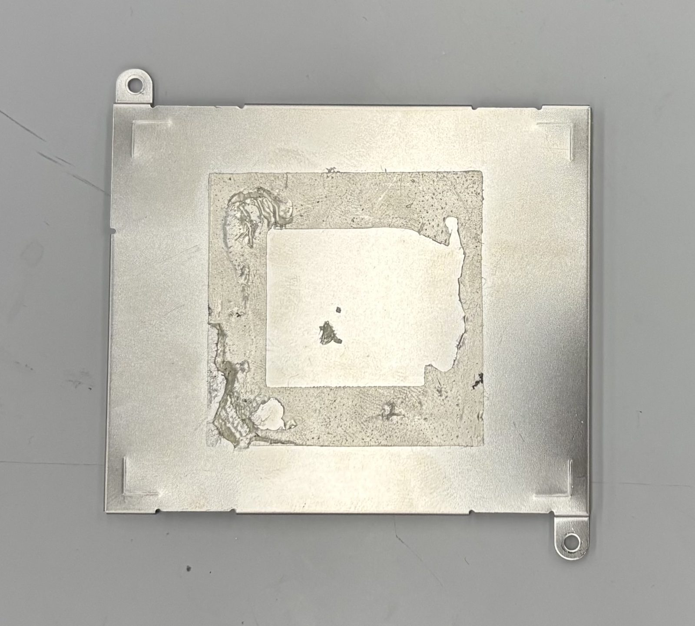
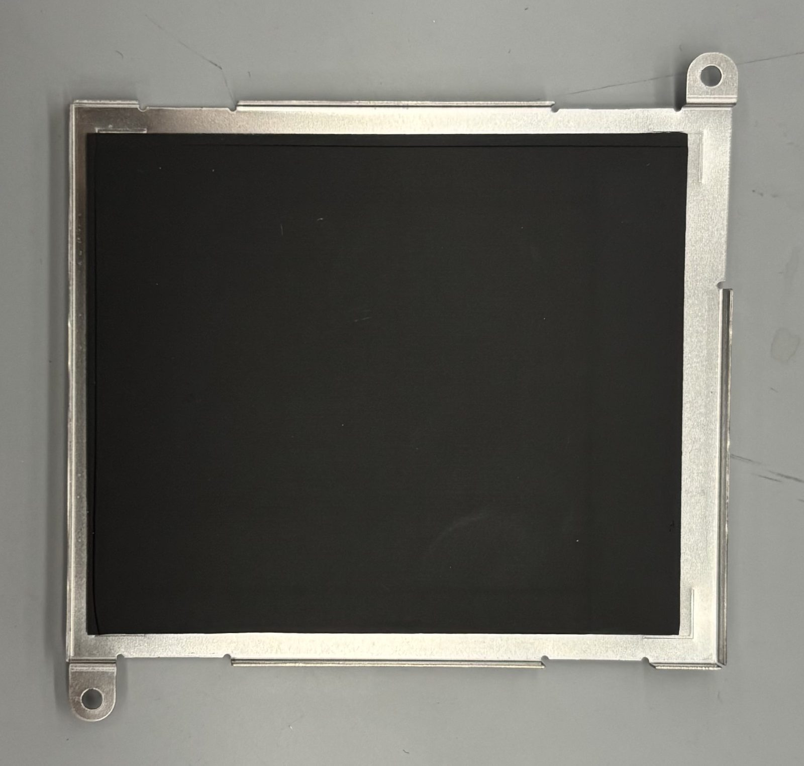
Identifying the alloy
To identify the material we utilized the XRF on a clipped off tab from the battery cover. According to the XRF scan the material is primarily iron with added chromium, nickel, and manganese (see Table 1). Comparing our numbers with the alloy data in Ansys Granta EduPack, the closest match is 301 stainless steel.
| Element | Measured (wt.%) | 301 SS spec (wt.%) |
|---|---|---|
| Fe (iron) | 74.4 | 70.8–78 (balance) |
| Cr (chromium) | 16.8 | 16–18 |
| Ni (nickel) | 6.2 | 6–8 |
| Mn (manganese) | 1.7 | 0–2 |
| C (carbon) | not detectable by XRF | 0–0.15 |
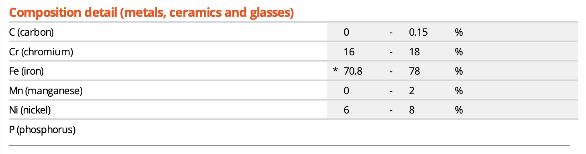
Stainless Steel is primarily composed of iron with other metals added to enhance certain properties of the alloy such as strength, ductility, and corrosion resistance.
For example, our sample contains nickel (6.21%), which is added to stabilize the FCC crystal structure of the steel. When iron is heated over a temperature threshold of 910°C the crystal structure changes from body centered cubic (BCC) to face centered cubic (FCC). Nickel contents of roughly 6-10% mixed with the iron stabilizes the iron’s FCC microstructure below 910°C. This FCC microstructure is what defines austenitic stainless steel. Austenitic stainless steels are known for having more ductility than other stainless steels because the FCC crystalline structure is more closely packed compared to a BCC structure and therefore the atoms are more likely to slip past each other rather than fracturing in response to stress. This ductility is why nickel is found in our battery cover; it allows the steel to be rolled out into a thin sheet metal then cut and bent into the shape.
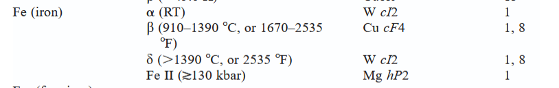
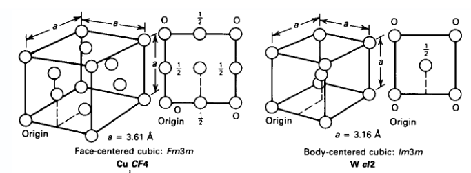
The battery cover also has a small amount of manganese (1.727%) which is added to stainless steels in order to bond with sulfur. Sulfur can react with the iron in the steel and create iron sulfides (FeS) which accelerate corrosion of the steel and make it more brittle and likely to crack. [30] Adding manganese to the alloy allows the manganese to bind with the sulfur to create manganese sulfide (MnS), a ceramic particle that ties up the sulfur and does not affect the strength of the steel. A brittle battery cover means that the cover could crack if the kindle was dropped which wouldn’t protect the battery very well.
Chromium (16.75%) primarily acts as corrosion resistance for the steel. Chromium reacts with oxygen in water and air to form a thin layer of chromium oxide (Cr₂O₃) on the surface of the steel which prevents further oxidation and corrosion. [31] This chromium corrosion resistance is what makes stainless steels ‘stainless’ and why they’re used in a variety of environments. Corrosion resistance is a useful property for a battery cover because it's the first line of protection between the user and a leaking battery.
Mechanical properties
| Property | Value |
|---|---|
| Hardness (measured) | 308 HV |
| Young's modulus | 189 GPa |
| Yield strength | 758 MPa |
| Flexural strength | 696 MPa |
| Elongation at fracture | 16.5% |
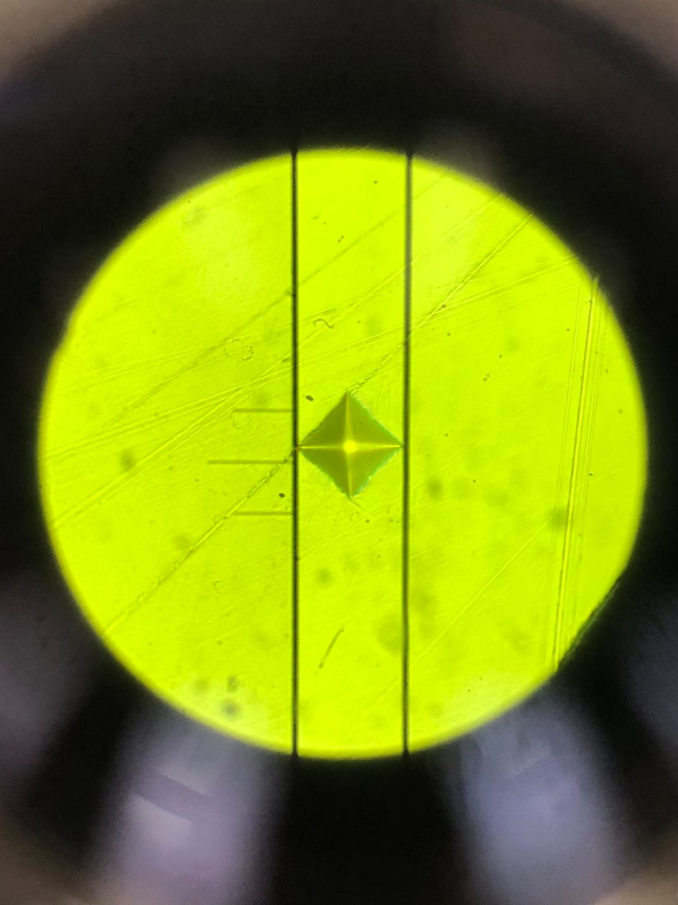
Hardness testing tells you how easy the material is to deform. 301 stainless steel is considered a very ductile material because of its FCC crystal structure and therefore has a very shallow yield strength but a large strain hardening area. This means that most forces will plastically deform the material including the manufacturing of that material. The hardness level in Vickers will tell us how much work hardening that material has already undergone since its formation.
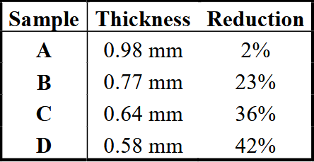
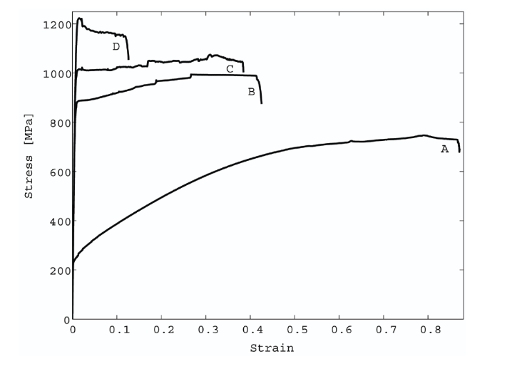
The hardness testing will tell us about how much work hardening the metal has undergone since it was created. When a material work hardens it will have a higher yield strength but a smaller work hardening area before fracturing (Figure 5). Work hardening ranges from annealed, or very soft, to full hard. As a material becomes more work hardened it will have a larger vickers hardness number: annealed 301 stainless steel has a hardness from 215-240HV and full hard stainless steel has a hardness from 381-423HV (Ansys Granta EduPack).
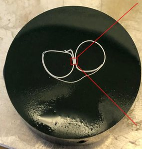
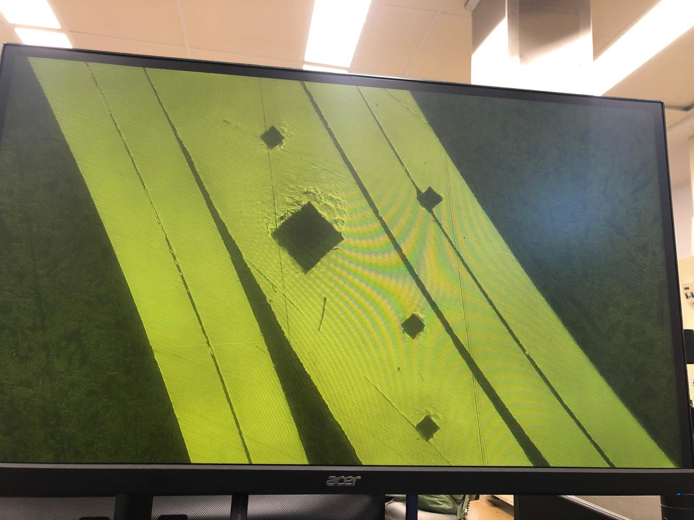
We tested the microhardness on a cross section of the clipped off tab from the battery cover. The sample was taken 5mm from the bend in the tab so we will assume that the number from this sample is indicative of the hardness of the rest of the battery cover. From our hardness number of 308HV, our sample is within the range of ½ hardened 301 stainless steel, 298-330HV (Ansys Granta EduPack). This means that our sample has been hardened by the manufacturing process but still has a lot of opportunity for further strain hardening.
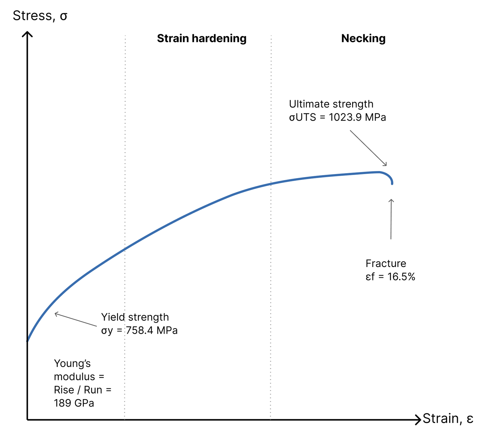
301 stainless steel is characterized by having a large work hardening area before it fractures. This allows it to have a high strength after cold working. 301 stainless steel is also moderately corrosion resistant to Inorganic acids, organic acids, and alkalis (Ansys Granta EduPack). It has excellent corrosion resistance to humidity and water (Ansys Granta EduPack).
Use phase
What happens when the battery swells?
Testing it: three-point bending
We modelled this load as flexure. The cover is supported near its two ends and pushed at the centre, so its outer face stretches (tension) while its inner face squeezes (compression). We reproduced this on an Instron universal testing machine as a three-point bend test.
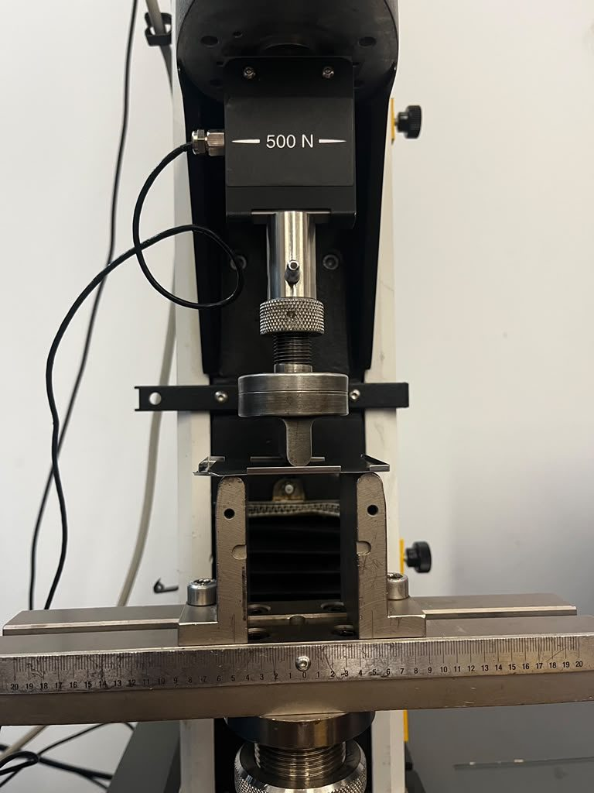
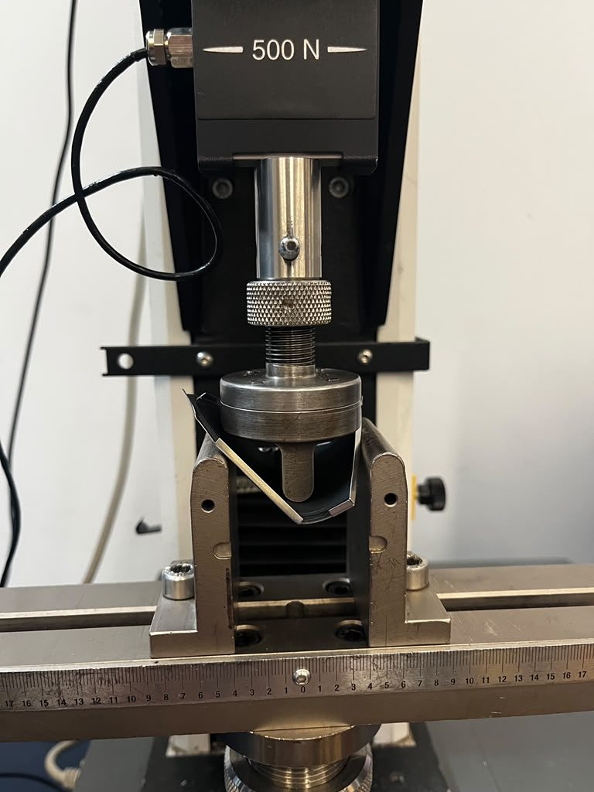
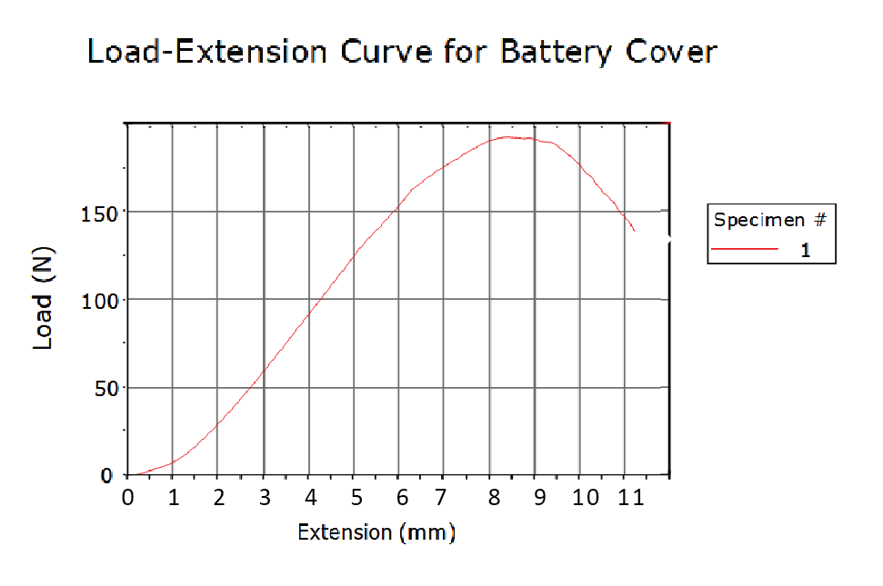
Finite Element Analysis Simulation
We first validate the FEA realism by simulating the three-point bending test. We create a load with 200N of force and constraints similar to the three-point test, and we achieve similar values with simulated displacement of 5.2mm in comparison to actual displacement of ~8mm at a similar force value. This validates that our FEA setup is accurate enough.
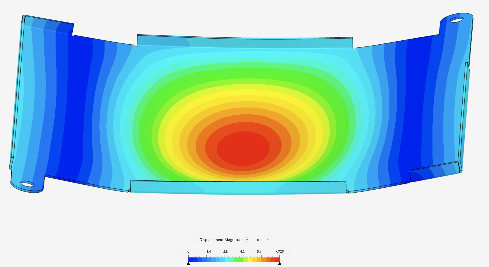
We simulate the battery swelling with FEA because the three-point bend test is a simplification. In the Kindle, the cover isn't resting on two rollers and pushed by a single nose. It is bolted down by two screws through tabs on opposite corners, and a swelling battery presses on it across a broad area rather than at one line. A simple beam model would also treat the cover as a flat strip, ignoring the bent walls, tabs and holes that make it so much stiffer in practice.
The FEA uses full cover geometry and holds it the way the device actually does, so the simulation can show where stress concentrates and whether a swelling battery would ever push the steel past yield. In the simulation, we assume the foam is negligible.
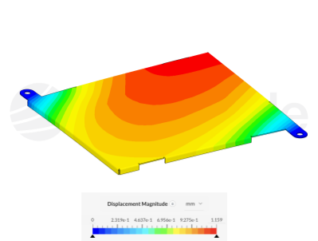
FEA results show a maximum displacement of approximately 1.1 mm for the battery swelling with a force of 184.22N. Our assumption that the foam is negligible should be re-visited because the foam itself can be displaced about 1mm, which is too close to the simulated displacement of 1.1mm. Common wisdom would assume that if the foam is softer than 301 stainless steel, only the foam would deform and the steel would be left untouched.
How hard is it to take back apart?
Before the cover can be recycled as clean stainless steel, everything stuck to it has to come off. Here is how our teardown went:
- Pry off the Kindle's outer plastic case.
- Remove the two screws holding the battery cover to the chassis.
- Separate the lithium-ion battery from the cover, which it is bonded to with adhesive.
- Peel the black foam pad off the cover. Underneath is a thin plastic film, which also peels off by hand.
- Wipe off the leftover adhesive with ethanol.
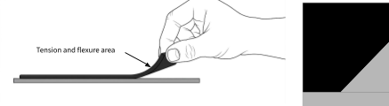
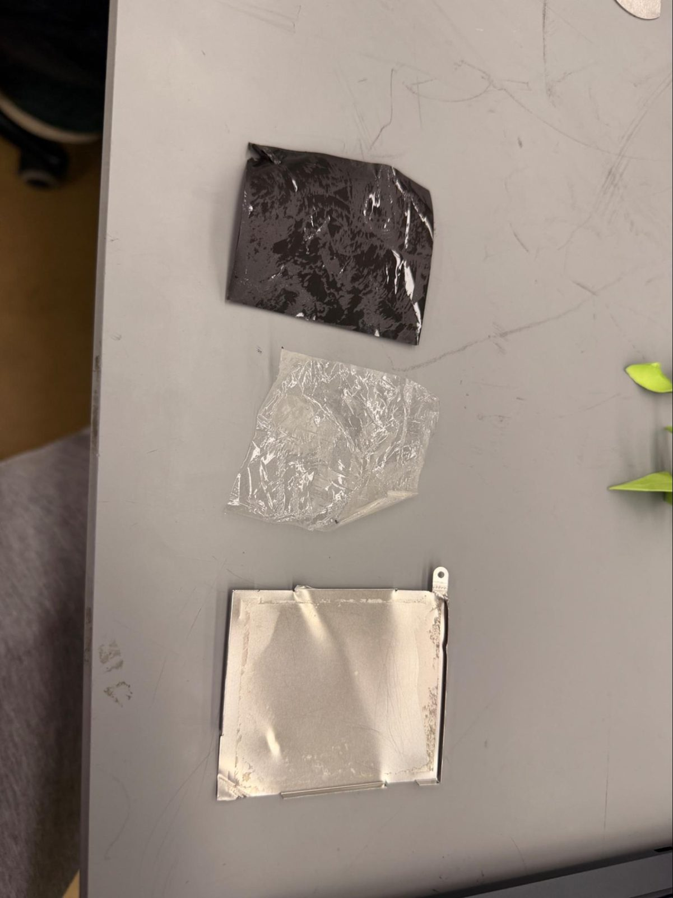
Peeling foam tape takes up to about 35 N [3], easily done by hand. The real stress state is complicated, with tension in the adhesive and some twisting. To estimate the stress in the steel, we assumed the peel force pulls along the face of the cover, which loads its cross-section in simple tension:
Stress in the cover during peeling
About 0.3% of the yield strength: purely elastic, and the steel springs back unharmed.
Taking the cover apart barely loads the steel at all. And since the steel is going to be melted down, a little bending wouldn't matter anyway.
The battery cover is easy to recycle: two screws and a peel. It would be even easier without the adhesive. The bent walls and screws already hold the battery in place, so the glue mostly adds a cleaning step (and a solvent) between the device and a clean stream of stainless steel.
Sources
- Peel force of adhesive foam tape, Force Channel. force-channel.com
- Ansys Granta EduPack, record for AISI 301 stainless steel (composition and mechanical properties).
- ASM International. ASM Handbook: Metallography and Microstructures. dl.asminternational.org
- Knovel (Elsevier), resource kpCUB00002, p. 257. app.knovel.com
- Knovel (Elsevier), resource kpCUB00002, p. 247. app.knovel.com
- Deformation induced martensitic transformation of metastable stainless steel AISI 301. ResearchGate. researchgate.net